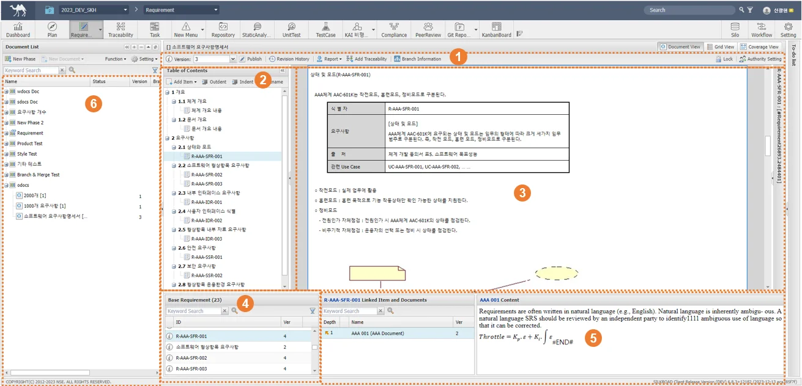
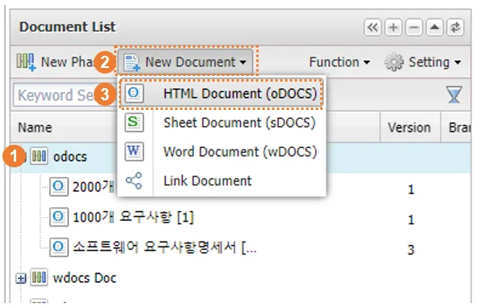
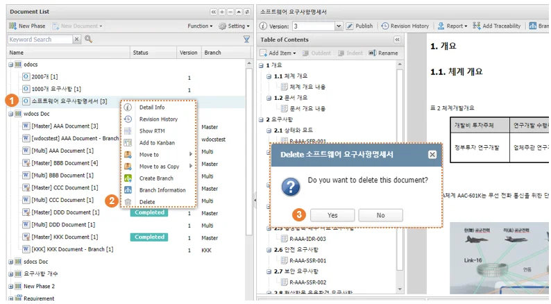
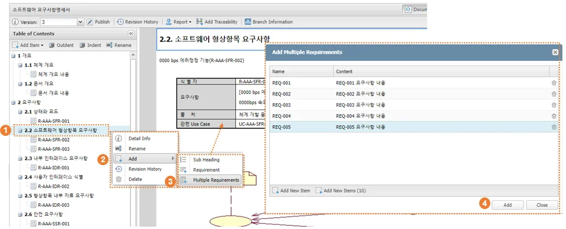
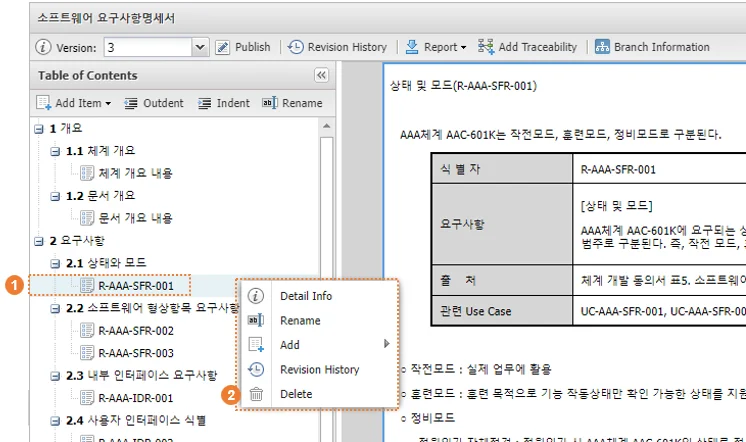
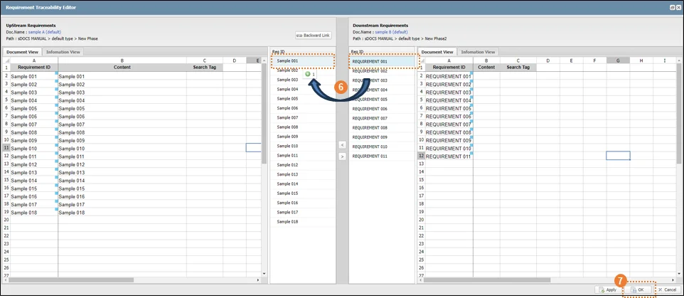
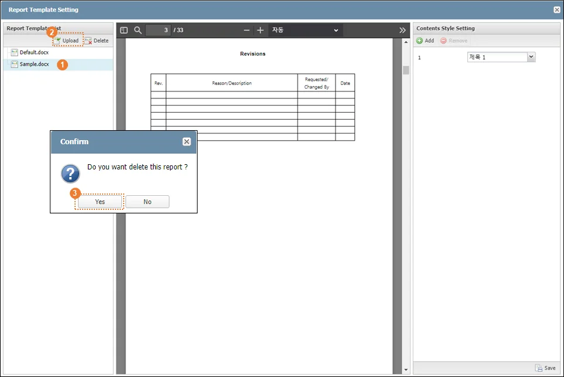
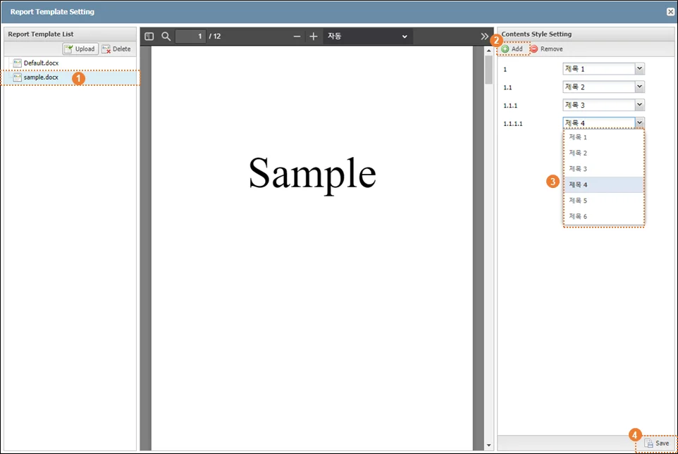
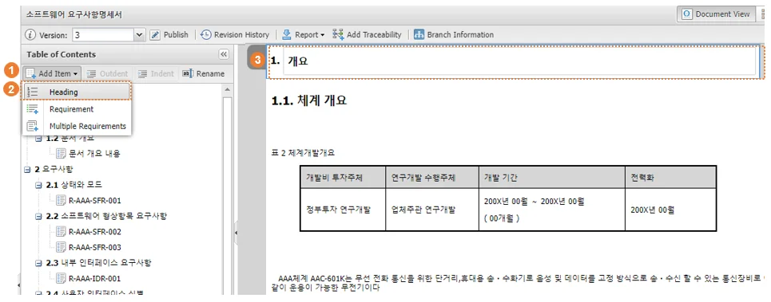

구분 | 명칭 | 설명 |
| 문서 메뉴 바 | 문서 정보 조회 및 설정, 출력 기능 제공 |
| Table of Contents | oDOCS 문서 목차 관리 |
| 문서 편집 영역 | oDOCS 문서 편집 영역(HTML Editor) |
| Base Requirement | 현재 문서 내 등록된 요구사항 목록 |
| Linked Item and Document | 등록된 요구사항과 추적성 연결된 아이템 목록 |
| Document List | 요구사항 Phase, 요구사항 문서 목록 |
SILKROAD 문서 편집기 중 oDOCS는 HTML Editor를 기반으로 문서를 작성하고 편집할 수 있는 기능을 제공한다. oDOCS 문서는 요구사항 단위로 문서 내 영역을 생성하여 요구사항 내용으로 텍스트, 이미지, 표, 수식 등 객체를 포함할 수 있다. oDOCS는 Web Server 구동 프로그램으로 별도의 클라이언트 프로그램 설치가 필요하지 않으며, 문서 단위가 아닌 요구사항 단위로 편집이 가능하여, 하나의 문서를 여러 사용자가 동시에 수정 가능하다.
 |
구분 | 명칭 | 설명 |
| 문서 메뉴 바 | 문서 정보 조회 및 설정, 출력 기능 제공 |
| Table of Contents | oDOCS 문서 목차 관리 |
| 문서 편집 영역 | oDOCS 문서 편집 영역(HTML Editor) |
| Base Requirement | 현재 문서 내 등록된 요구사항 목록 |
| Linked Item and Document | 등록된 요구사항과 추적성 연결된 아이템 목록 |
| Document List | 요구사항 Phase, 요구사항 문서 목록 |
① Document List에서 문서를 생성할 Phase를 선택 또는 생성(New Phase)한다.
② Document List에서 Phase 선택 후 ‘New Document’ 메뉴의 펼침(▼)버튼을 클릭한다.
③ ‘HTML Document(oDOCS)’ 버튼을 클릭한다.
 |
‘Create HTML Document’기능은 Phase를 마우스 우클릭해 콘텍스트 메뉴에서 실행할 수 있다.
oDOCS 문서는 요구사항 단위로 편집 가능한 상태로 변경한다. 편집 상태의 요구사항은 ‘요구사항 잠금(Lock)’이 자동 설정되고 다른 사용자의 편집을 제한한다. 따라서, 다른 사용자 계정에 의해 ‘요구사항 잠금(Lock)’ 설정된 요구사항은 설정한 사용자 또는 프로젝트 관리자에 의해 잠금 해제(Unlock) 후 편집해야 한다. 요구사항 편집 실행 시 HTML Editor 영역이 활성화 되고 관련 기능 메뉴가 제공된다.
① Document List에서 편집할 oDOCS 문서를 클릭한다.
② Table of Contents 목록에서 편집할 요구사항을 선택 후 요구사항 영역에 마우스 오버한다.
③ 사이드바 메뉴에서 좌측 상단 요구사항 편집 아이콘( )을 클릭한다.
oDOCS 문서는 요구사항 단위로 잠금(Lock) 기능이 적용되어 하나의 문서에서 요구사항 단위로 편집 제한이 가능하다. 잠금(Lock) 상태가 아닌 요구사항은 다른 사용자가 편집할 수 있다. |
|
oDOCS에서 요구사항 편집을 종료하는 기능이다. 편집 상태에서 요구사항 사이드바 좌측 상단에 위치한 저장 아이콘()을 클릭해 편집을 종료하고 요구사항 수정 내용을 저장한다. 편집 종료 시 ‘요구사항 잠금 해제(Unlock)’가 자동 설정되고 다른 사용자의 접근을 허용한다. 문서 Publish는 사용자 선택에 따라 실행되며 버튼 클릭 시 요구사항의 최신 버전을 기준으로 oDOCS 문서 버전이 생성된다.
① Document List에서 oDOCS 문서를 선택한다.
② 요구사항 사이드바 상단의 편집 아이콘을 클릭 해 편집 상태로 변경한다.
③ 요구사항 사이드바 상단의 저장 아이콘을 클릭한다.
④ 사용자가 원하는 경우 Publish를 실행한다. Publish를 수행하지 않아도 요구사항 내용은 저장되며, Publish 수행 시 문서의 최신 내용으로 문서 버전이 생성된다.
문서 삭제 기능은 Project Manager 또는 사용자 권한 Super, Admin 을 가진 사용자가 사용할 수 있다. 삭제 기능을 사용할 수 없는 사용자는 Project Manager에게 삭제에 필요한 권한인 메뉴 권한 ‘Admin’을 부여 받아야 한다. 삭제된 문서는 실크로드 내에서 제거되어 복구될 수 없다.
① Document List에서 삭제 할 문서를 클릭한다.
② 마우스를 우클릭 하여 콘텍스트메뉴에서 ‘Delete’클릭한다.
③ ‘Do you want to delete this document?’안내팝업에서‘Yes’를 클릭한다.
 |
잠금 설정(Lock) 문서는 잠금 해제(Unlock) 후 삭제할 수 있다. |
Publish기능은 oDOCS에서 편집한 요구사항, 장절 데이터를 기반으로 문서 버전을 생성하는 기능이다. oDOCS는 요구사항 단위 편집과 저장이 이루어지므로, 문서 Publish를 하지 않아도 문서 내용은 저장되지만 사용자 요구에 따라서 문서 버전을 생성할 필요가 있을 때 문서 Publish를 실행할 수 있다. 문서의 버전(Version)은 시스템에서 기본적으로 ‘1’로 설정되며, 사용자가 변경할 수 있다. 문서 버전은 Publish 실행 시마다 자동으로 이전 문서 버전에서 ‘1’이 증가된다.
① ‘Publish’ 버튼을 클릭한다.
② 필수 입력항목인 문서 제목(Name), 버전(Version) 및 설명(Description)을 입력한다.
③ ‘Publish’ 버튼을 클릭한다.
|
oDOCS는 문서에 요구사항 영역을 생성하여 요구사항 데이터를 입력한다. wdocs와 sdocs와 달리 생성된 요구사항에 대한 등록 기능은 필요하지 않으며, 생성된 요구사항 데이터는 자동으로 저장된다. 등록된 요구사항의 내용은 요구사항 영역에서 직접 수정이 가능하며, 요구사항 정보(Information)에서 요구사항 속성 데이터의 수정이 가능하다.
① 문서 리스트에서 oDOCS 문서를 선택한다.
② Table of Contents 영역에서 요구사항을 생성할 위치(목차/요구사항)를 선택한다. 요구사항은 선택한 목차 또는 요구사항의 하위에 생성된다.
③ 선택한 위치에서 상단 Add Item – Requirement를 클릭하거나, 우클릭하여 Add-Requirement를 선택한다.
④ 문서 영역에 새로운 요구사항 영역이 생성되면 요구사항 내용을 입력한 후 좌측 상단의 저장 아이콘()을 클릭하여 요구사항을 저장한다.
⑤ 요구사항 속성 데이터는 문서 영역 우측 Properties 탭에서 요구사항 속성을 수정 후 OK 버튼을 클릭하여 수정 내용을 저장한다.
|
oDOCS에서는 사용자 편의를 위하여 여러개의 요구사항을 한번에 생성할 수 있다. 사용자는 요구사항 생성창에서 요구사항 아이디와 내용을 한번에 입력할 수 있으며, 입력한 요구사항은 순차적으로 문서에 생성된다.
① 문서 리스트에서 oDOCS 문서를 선택한다.
② Table of Contents 영역에서 요구사항을 생성할 위치(목차/요구사항)를 선택한다. 요구사항은 선택한 목차 또는 요구사항의 하위에 생성된다.
③ 선택한 위치에서 상단 Add Item – Multiple Requirement를 클릭하거나, 우클릭하여 Add-Multiple Requirement를 선택한다.
④ Add Multiple Requirement 창에서 요구사항 제목과 내용을 입력한다. 요구사항 추가 시 좌측 하단 Add New Item을 클릭하여 요구사항을 생성한다.
⑤ 요구사항 생성 완료 후 Add 버튼을 클릭하면 문서 영역에 새로운 요구사항이 순차적으로 생성된다.
 |
등록된 요구사항은 편집 버튼()을 클릭하면 읽기 모드에서 편집 모드로 변경된다. 요구사항 편집 모드에서는 HTML Editor 영역이 활성화 되고 관련 기능 메뉴가 제공된다. 요구사항 편집이 완료되면 저장 버튼()을 클릭하여 요구사항 편집 모드를 종료한다. 요구사항 편집 모드에서는 ‘요구사항 잠금(Lock)’이 자동 설정되고 다른 사용자의 편집을 제한한다.
① 수정 대상 요구사항을 선택하고 사이드바 메뉴 좌측 상단의 편집 버튼()을 클릭한다.
② 편집 모드에서 요구사항 내용을 수정한다.
③ 수정 완료 후 사이드바 메뉴 좌측 상단의 저장 버튼()을 클릭한다.
|
등록된 요구사항을 삭제하는 기능이다. oDOCS에서 요구사항 삭제 시 문서 내 요구사항 영역도 삭제된다.
① Table of Contents 영역에서 삭제한 요구사항을 선택하거나 문서 내에서 요구사항 영역을 클릭한다.
② 요구사항 선택 후 우클릭하여 Delete를 클릭하거나 요구사항 사이드바 좌측 하단의 삭제 아이콘을 클릭한다.
 |
요구사항 정보창은 요구사항 관련한 모든 정보를 표시한다. 요구사항 내용과 관련 속성 필드의 상세 내용을 표시하고 사용자의 역할/권한에 따라 수정할 수 있다. 또한 상·하위 추적 요구사항 정보를 표시해 요구사항 변경에 따른 영향도 분석을 제공한다. 요구사항 버전 콤보 박스를 이용해 선택한 버전의 요구사항 내용과 추적성 연결 정보를 확인할 수 있다.
① Base Requirement 목록에서 요구사항을 더블 클릭하거나, ‘ ’아이콘을 클릭한다.
’아이콘을 클릭한다.
② 또는, ‘sDOCS View’에서 요구사항 ID 셀을 클릭하고, 우 측의 퀵 뷰(Quick View)를 연다.
요구사항 정보창을 이용한 편집은 Requirement 메뉴에서만 가능하고 다른 메뉴에서 요구사항 정보창을 여는 경우 읽기 전용 상태로 제공된다. |
요구사항 정보창 Properties 탭은 sDOCS에 추가되고 작성된 요구사항의 최신 필드 데이터를 표시한다. 역할 및 권한(Role & Authorities)에 따라 정보창에서 필드 속성 값을 수정할 수 있고, 수정된 값은 저장 시 sDOCS에 즉시 반영한다. 정보창을 통해 수정된 요구사항은 버전이 상승하고 저장(Publish) 시 반영된다.
사용자 정의 유형(Custom Type)이 설정된 경우 사용자 양식(Form)의 형태로 화면을 구성할 수 있다.
|
요구사항 정보창 Information 탭은 해당 요구사항과 추적성 연결된 상/하위 요구사항 연결 정보를 그리드와 다이어그램 형태로 표시한다. 요구사항의 추적성 정보는 최신 저장(Publish)된 연결 상태를 표시하므로, 추적성 연결을 수정하고 정보창에서 확인하고자 하는 경우 저장(Publish)을 먼저 수행해야한다.
|
선택한 요구사항의 추적성 연결 정보를 별도로 생성되는‘Impact Analysis’창에서 원하는 배치 상태로 설정하고 확인할 수 있다. wDOCS로 작성된 요구사항은 요구사항 카드에 내용이 표시되고, sDOCS로 작성한 요구사항은 카드 하단의 ‘’아이콘을 클릭해 정보창을 생성하고 내용을 확인할 수 있다.
|
요구사항 버전별로 발생한 변경사항(추가, 수정, 삭제)을 비교하고 확인하는 기능으로, 사용자 정의 유형(Custom Type)이 설정 문서에 한해 제공된다. 저장(Publish)된 요구사항의 버전과 비교 버전을 선택하고 변경사항을 확인한다.
1) 최신 버전과 직전 버전 비교
① sDOCS 요구사항 정보창을 열어 ‘Compare’버튼을 클릭한다.
① Document Compare 창을 생성해 두 버전 사이 변경된 내용을 비교한다.
② 요구사항 필드에 변경 상태에 따라 색상 표시를 제공한다.
- 파란색 : 수정, 빨간색 : 삭제
2) 사용자 선택 버전 비교
③ sDOCS 요구사항 정보창을 열어 ‘Compare’버튼을 클릭한다.
④ Document Compare 창에서 ‘Base Version’과 ‘Compare Version’콤보박스를 이용해 비교 버전을 선택한다.
⑤ ‘Compare’버튼을 클릭 해 두 버전의 내용을 비교한다.
⑥ 요구사항 필드에 변경 상태에 따라 색상 표시를 제공한다.
- 파란색 : 수정, 빨간색 : 삭제
요구사항이 등록된 문서의 정보창을 생성하는 기능이다. 문서 정보창과 요구사항 정보창은 읽기 전용 상태로 문서의 내용을 편집할 수 없다.
요구사항의 버전별 변경 정보를 제공한다. 변경 사항은 요구사항 필드 정보와 변경 일자, 버전, 상위 요구사항 정보(Upstream) 그리고 작성자를 기반으로 생성된다.
요구사항 추적성 관리
상위 요구사항과 하위 요구사항 간 추적성을 연결하는 기능이다. 요구사항 간 추적성을 연결하기 위해서는 반드시 등록된 요구사항이 존재해야 하며, 하나 이상의 상위 문서와 요구사항 추적성을 연결할 수 있다.
요구사항 간의 추적성 연결은 하위 문서에서 실행하여 상위 문서로 연결된다.
① ‘Requirement’ 탭의 ‘Link’ 버튼을 클릭한다.
② ‘Requirement Traceability Editor’ 화면이 생성되면 좌측 ‘Upstream Requirements’ 영역에서 ‘Backward Link’ 버튼을 클릭한다.
③ ‘Selection of Upstream Document’ 화면에서 대상 메뉴를 선택한다.
④ 추적성을 연결 할 상위 문서를 선택한다.
⑤ ‘OK’ 버튼을 클릭한다.
⑥ 우측 하위 요구사항을 좌측 상위 요구사항 영역으로 드래그 한다.
- ‘<’버튼과 단축키 ‘alt+A’를 사용해 추가할 수 있다.
⑦ ‘OK’ 버튼을 클릭한다.
|
 |
추적성 연결을 삭제/취소할 시, 상위 요구사항에 추가된 하위 요구사항을 선택하고 하위 요구사항 방향으로 Drag&Drop 하거나 화면중앙 ‘>’ 버튼을 클릭, 또는 단축키 ‘alt+D’를 이용한다.
추적성 연결 후 ‘Apply’ 기능을 사용해 설정한 추적성 연결 정보를 저장하고, Link 팝업은 종료되지 않아 연속적으로 다른 문서의 요구사항과 추적성을 연결할 수 있다. OK 버튼 클릭 시, 추적성 연결 정보를 저장하고 편집 창을 종료한다.
sDOCS 문서에서 등록된 요구사항 정보창을 통해 추적성을 연결하는 기능이다. 하나의 요구사항과 하나 이상의 상위 요구사항과 추적성 연결이 가능하다. 추적성이 연결된 요구사항은 버전이 상승하고 저장(Publish)해 반영한다.
① sDOCS 화면에서 등록된 요구사항을 우 클릭해 ‘Add Traceability’를 실행한다.
② ‘Add Traceability’창에서 대상 메뉴와 상위 문서를 선택한다.
③ ‘Requirement List’에서 추적성 연결 대상 요구사항 체크박스를 체크한다.
- 또 다른 상위 문서와 추적성 연결 필요 시, 상위 문서를 선택하고 추적성 연결 대상 요구사항 체크박스를 체크한다.
④ ‘OK’버튼을 클릭한다.
|
oDOCS 문서는 사용자 정의 유형(Custom Type)으로 지정된 경우에 Word 문서 Report를 생성할 수 있다. oDOCS 문서의 Report의 템플릿을 지정하고, 목차 스타일을 지정하는 기능을 제공한다.
Report 템플릿을 추가, 삭제하거나 업데이트한다. 각 템플릿의 목차 스타일을 지정해 출력물 생성 시 목차가 자동으로 생성되도록 설정할 수 있다.
목차 스타일이 존재하는 Word 문서를 Report 템플릿으로 생성한다. 목차 스타일이 설정되지 않은 문서는 Upload가 제한되고 안내 팝업을 생성한다.
① Document List Setting을 클릭해 ‘Report Template Setting’을 실행한다.
② ‘Upload’버튼을 클릭한다.
③ Upload 대상 템플릿(.docx)을 선택한다.
④ Upload 템플릿의 이름을 입력하고 ‘OK’버튼을 클릭 한다.
⑤ Report Template List에 Upload한 템플릿 문서가 생성된다.
|
Report 템플릿과 설정된 목차 스타일을 모두 삭제한다.
① Report Template List에서 템플릿을 선택한다.
② ‘Delete’ 버튼을 클릭한다.
③ ‘OK’버튼을 클릭한다.
 |
템플릿 문서를 업데이트 할 수 있다. 기존 문서에 설정된 ‘Contents Style Setting’은 제거되고 대체된 문서에 대해 재설정해야 한다.
① Report Template List에서 템플릿 문서를 우클릭 한다.
② ‘Update Report Template(*.docx)’를 클릭한다.
③ 업데이트할 Word 문서를 선택한다.
|
선택한 템플릿 문서를 다운로드 한다. 다운로드한 템플릿 문서에서 수정이 이루어지는 경우 ‘Update Report Template’기능을 통해 기존 등록된 템플릿 문서에 반영한다.
① Report Template List에서 대상 템플릿을 우클릭 한다.
② ‘Report Template Download’를 클릭한다.
선택한 템플릿 문서에 목차별 스타일을 설정한다. 각 장절항목을 추가하고 템플릿 문서에 존재하는 스타일 중 적절한 스타일을 선택하여 지정한다. 스타일 생성(Add) 시 장절항목 번호가 1, 1.1, 1.1.1.. 순으로 생성되고 제거(Remove) 하면 마지막 생성된 장절항목부터 순서대로 제거한다.
① Report Template List에서 대상 템플릿을 선택한다.
② Contents Style Setting 영역에서 ‘Add’버튼을 클릭한다.
③ 생성된 장절항목의 콤보박스를 클릭해 스타일을 지정한다.
④ ‘Save’버튼을 클릭한다.
 |
oDOCS 문서 Report 생성을 위해 문서 내용에 따른 목차를 생성하고, 각 목차에 요구사항을 추가해 Report 문서 구조를 설정한다.
① Document List에서 대상 문서를 선택한다.
② ‘Table of Content’ 영역에서 ‘Add Item’ 버튼을 클릭한다.
③ ‘Add Item’ 확장메뉴에서 ‘Heading’버튼을 클릭하여 목차를 생성한다.
④ 생성된 목차의 제목을 입력한다.
⑤ 목차에서 우클릭 후 ‘Add’ – ‘Sub Heading’을 클릭하면 하위 목차를 생성할 수 있다.
⑥ 생성된 요구사항을 선택해 드래그 하여 목차에 추가한다.
Report Contents에서 구성하는 목차의 구조(Depth)는 Report Template Setting에서 설정한 Contents Style Setting의 목차 구조(Depth) 범위를 넘어가지 않아야 한다. |
 |
작성된 ㅇDOCS 문서를 지정한 템플릿과 설정한 목차, 요구사항 구성에 따라 Report를 생성한다. Report 생성을 위해서는 양식 설정과 스타일 설정, 목차 구성이 선행되어야 한다.
① ‘Report Template Setting’을 설정한다.
② ‘Report Contents’를 설정한다.
③ Document List에서 oDOCS 문서를 선택하고, sDOCS View의 ‘Report’를 클릭 해 Download PDF/Word를 선택한다.
④ Select Report Template창에서 출력물 양식을 선택하고 ‘Download’버튼을 클릭한다.
|
Report Download를 위해 Report Contents 의 목차 구조 설정이 선행되어야 한다. 목차 구조가 설정되지 않은 경우, Select Report Template창에서 Download가 동작하지 않고 안내 메시지 팝업을 생성한다. Report Contents의 목차 구조(Depth) 중 스타일이 사전 지정되어 있지 않은 경우, Select Report Template창에서 Download가 동작하지 않고 안내 메시지 팝업을 생성한다. 이를 해결하기 위해서는 ⅰ) 해당 문서 Report Contents의 목차 구조(Depth)를 지정한 양식 스타일에 맞게 수정하거나, ⅱ) Report Template Setting에서 양식의 스타일을 추가로 생성해 지정해주어야 한다. |